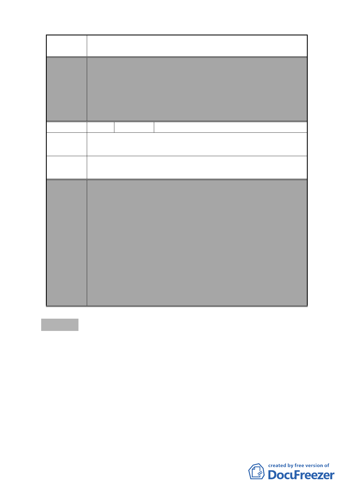

案名
編號
變更復興北路與長安東路口東北側第三種住宅區為第三種住
宅區（特）細部計畫案
3.計畫書「其他」項內增列「所申請之容積獎勵面積後續於
完成都市設計審議核備及領取建築執照後不得任意變更設
計，如後續確有需要辦理變更設計者，則該部分獎勵面積
須重新審查，若已完成超過部分之獎勵容積樓地板施工
者，則不予核發該部分之使用執照」等文字敘述，以為周
延。
9 陳情人 張士賓等 17 人
陳情理由
合庫好好看開發計畫案與本區更新案能併案處理。
建議辦法 合庫能留下足夠保留地與本區往後能更新處理。
委員會
決議
本案除以下幾點應再作修正外，其餘依市府本次會議所送修
正計畫書及專案小組審查意見回應資料內容通過。
1.本案有關都市設計管制規定，名稱請統一為都市設計管制
「準則」。
2.計畫書第 31 頁（四）第 1 點有關地下開挖率規定，請予刪
除，依現行市府通案處理原則辦理。
3.計畫書「其他」項內增列「所申請之容積獎勵面積後續於
完成都市設計審議核備及領取建築執照後不得任意變更設
計，如後續確有需要辦理變更設計者，則該部分獎勵面積
須重新審查，若已完成超過部分之獎勵容積樓地板施工
者，則不予核發該部分之使用執照」等文字敘述，以為周
延。
參、散會（17 時 30 分）
- 81 -